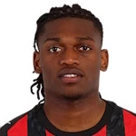
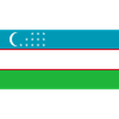

Portugalsko na MS 2026: konec v osmifinále a rozloučení Ronalda
Portugalsko dohrálo v osmifinále: 0:1 se Španělskem 6. července, gól padl až v nastaveném čase z kopačky Merina. Nejspíš to byl poslední mundial Cristiana Ronalda.

Jak turnaj skončil
Portugalsko dohrálo v osmifinále: 0:1 se Španělskem 6. července, gól padl až v nastaveném čase z kopačky Merina. Nejspíš to byl poslední mundial Cristiana Ronalda.
Portugalsko na MS 2026: přehled
Cesta turnajem skončila v osmifinále.
Klíčoví hráči
Hráči podle výkonu a odehraných minut.




Portugalsko: zápasy na MS 2026
Dosavadní průběh turnaje — 2 výher, 2 remíz a 1 proher.
2026
 SpagnaDomácí
SpagnaDomácí2026
 CroaziaDomácí
CroaziaDomácí2026
 ColombiaHosté
ColombiaHosté2026

UzbekistanDomácí2026
 RD CongoDomácí
RD CongoDomácíSilné a slabé stránky
Silné stránky. Záloha snesla srovnání i se Španělskem: tým Martíneze držel krok až do devadesáté minuty a nikdy se nesesypal.
Slabé stránky. Stará známá bolest — koncovka. Dominance na míči se v zápasech, které rozhodovaly, prostě nepřetavila do gólů.
Klíčoví hráči týmu
Pod vedením trenéra Roberto Martínez jsou klíčovými hráči Vitinha, Bruno Fernandes, Cristiano Ronaldo.
Historie na MS
Nikdy nevyhrálo MS (nejlepší výsledek třetí místo v roce 1966). Mistři Evropy 2016, vítěz Ligy národů 2019 a 2025 — porážka 2026 uzavírá éru Ronalda na mundialech.
Bilance turnaje
Krutý konec: gól v nastavení, jediná porážka na turnaji. Talentů zůstává dost, ale otázka, kdo bude dávat góly, se veze dál — až do roku 2030.
Španělsko · kurz 1,67Ostatní favorité


Časté dotazy
Proč Portugalsko vypadlo z MS 2026?
V osmifinále prohrálo 0:1 se Španělskem gólem Merina v nastaveném čase.
Bylo to poslední MS Cristiana Ronalda?
Všechno tomu nasvědčuje — byl to jeho šestý mundial.
Prohrálo Portugalsko na turnaji ještě jiný zápas?
Ne, osmifinále bylo jedinou porážkou.
Kdo je trenérem Portugalska?
Roberto Martínez.
Portugalci jsou na každém velkém turnaji tým, o kterém se mluví. Letos se o nich mluví dvojnásob – jenže jinak, než doufali. Seleção vypadla 6. července v osmifinále, když v Dallasu podlehla Španělsku 0:1 gólem Mikela Merina v nastavení. A spolu s turnajem skončila i jedna éra: pro Cristiana Ronalda to bylo poslední mistrovství světa. Pojďme si to rozebrat střízlivě, bez růžových brýlí.
Byl to favorit, nebo outsider?
Ani jedno – klasický „druhý favorit". Sázkovky řadily Portugalsko před turnajem zhruba na pátou až sedmou pozici, za úzkou špičku Francie, Anglie, Argentiny a Španělska. A přesně tam tým doběhl i reálně: lepší než všichni outsideři, o krok za elitou. Tahle generace už párkrát ukázala, že umí zaváhat přesně ve chvíli, kdy to nejmíň čekáš – tentokrát to ovšem nebylo zaváhání, ale těsná porážka s pozdějším semifinalistou, který na turnaji dostal jediný gól.
Jak vypadala cesta turnajem
Skupina naznačila obě polohy týmu:
- 1:1 s DR Kongo – rozpačitý start
- 5:0 s Uzbekistánem – exhibice
- 0:0 s Kolumbií – bezzubá remíza
Ve dvaatřicítce Seleção zvládla těžký duel s Chorvatskem 2:1 a postoupila na Španělsko. Skóre turnaje 8:3, jediná porážka – a přesto konec dřív, než začala opravdová vyřazovací dřina.
Osmifinále: Španělsko a gól v nastavení
6. července, AT&T Stadium v Dallasu. Iberské derby, taktická bitva, nula nula až do nastavení – a pak úder: Mikel Merino, šest minut po svém příchodu z lavičky, poslal La Roju do čtvrtfinále. Portugalská ofenziva plná hvězd nedokázala za celý zápas rozseknout nejlepší obranu turnaje.
Je to krutý, ale výstižný obraz téhle generace: dost kvality na to, aby s každým hrála vyrovnaně, málo chladnokrevnosti na to, aby velké zápasy lámala na svou stranu.
Konec éry Ronalda
Cristiano Ronaldo odehrál své šesté mistrovství světa – žádný jiný hráč jich tolik nemá. Titul, jediná trofej, která mu v kariéře chybí, už nepřijde. Na turnaji přidal dva góly a odchází jako lídr šatny, ne jako každodenní kanonýr – přesně v roli, kterou mu poslední roky předpovídali.
Pro tým je to paradoxně i úleva: přestavba kolem Bruna Fernandese, Bernarda Silvy, Rafaela Leãa a mladíků typu Joãa Nevese může konečně začít bez věčné otázky, jak poskládat sestavu kolem legendy.
Co se pokazilo
- Produktivita proti kompaktním obranám – 0:0 s Kolumbií a 0:1 se Španělskem. Když soupeř zavřel vápno, nebylo řešení.
- Historická tendence „zamrznout" – Maroko 2022, EURO 2024 s Francií, teď Španělsko. Vzorec se opakuje s přesností hodinek.
- Věk opor – nejstarší jádro ze všech papírových favoritů. Tahle překážka se v roce 2030 vyřeší sama.
Kurzy: trh je uzavřený
Vyřazením se outright trh na portugalský titul zavřel. Předturnajové kurzy 9.00–13.00 se ukázaly jako férové ocenění – tým doběhl přesně tam, kam ho bookmakeři pasovali. Kdo dal na doporučení sázet spíš postup do semifinále než titul, prohrál taky, ale aspoň za rozumnější peníze.
Ve hře zůstává čtyřka Francie (2.49), Španělsko (4.30), Anglie (4.37) a Argentina (5.63). Ironie pro portugalské fanoušky: jejich kat je teď druhý největší favorit na zlato.
Tip: co s tím jako sázkař?
Portugalsko je mimo hru. Pozornost teď patří semifinále – Francie–Španělsko 14. července a Argentina–Anglie 15. července, finále 19. července na MetLife Stadium. Kdo chce zůstat u iberského fotbalu, má ve Španělsku jasného kandidáta; kdo sází proti němu, najde value u Argentiny.
Zkrátka: medaile byla v dosahu, zlato byl bonus – a ani jedno nevyšlo. Sázej s rozumem a jen to, co jsi ochotný oželet.